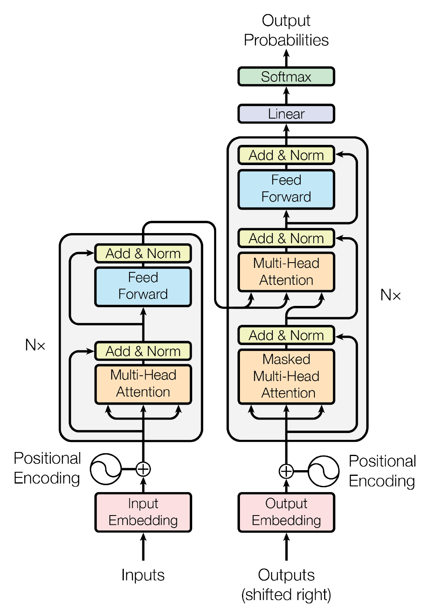
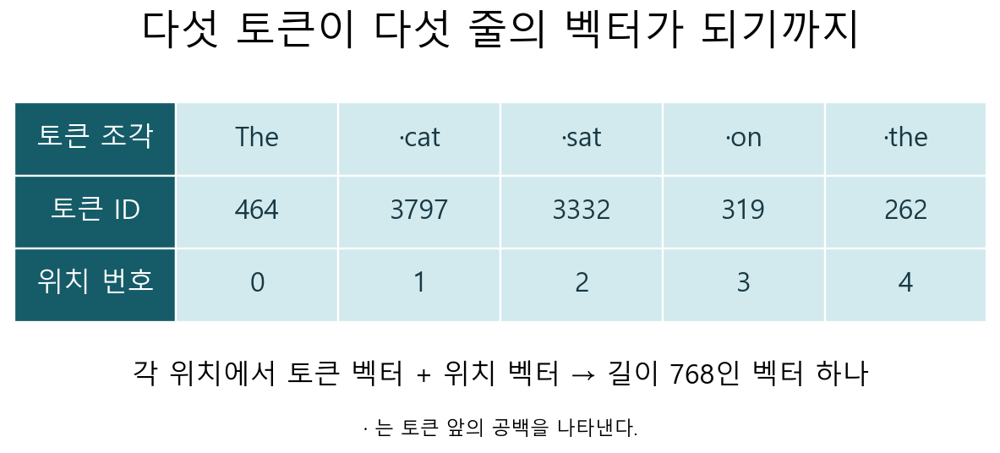
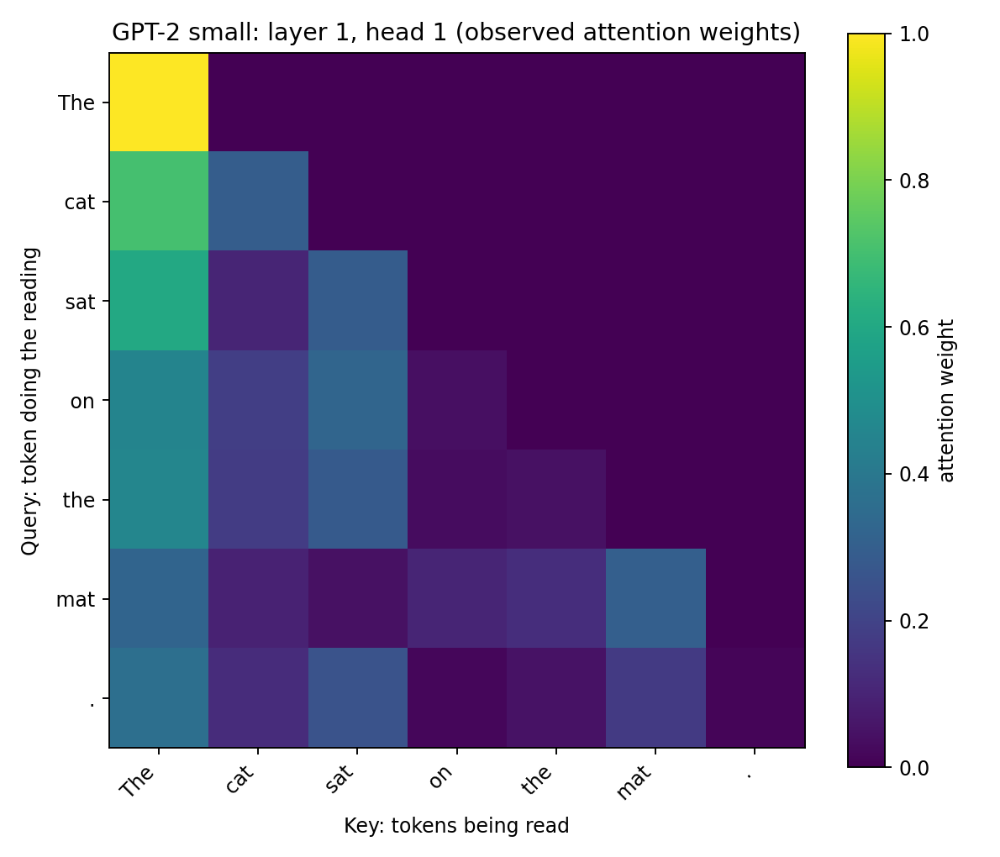
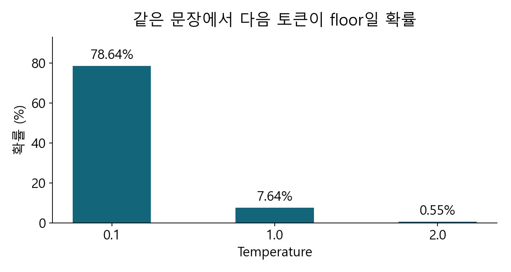

우선, 나는 AI에 프롬프트를 입력했을 때 그 문장이 모델 안에서 어떻게 처리되는지가 궁금했다. ‘다음 토큰을 예측한다’는 말은 많이 들어봤는데, 내가 입력한 건 문장이고 모델이 내놓는 것도 문장이다. 그 사이에서 무슨 일이 일어나길래 고양이가 어디에 앉았는지까지 이어 쓸 수 있는 걸까?
LLM은 Large Language Model의 약자로 대형 언어 모델을 말한다. 이때 언어 모델은 단어나 토큰이 어떤 순서로 나타날지에 확률을 부여하는 모델이다. 여기서 시퀀스(sequence)는 그냥 순서가 있는 나열이라고 생각하면 된다.
예를 들어 ‘나는 아침에 밥을’까지 들었다고 해보자. 뒤에 ‘먹었다’가 오면 자연스럽다. ‘먹었다’만 가능한 건 아니다. ‘남겼다’도 된다. 다음 토큰을 예측하는 언어 모델도 주어진 앞부분을 바탕으로 여러 후보에 각각 점수를 매긴다. 이때 모델이 사용하는 단위가 토큰이다. 단어 하나가 통째로 토큰이 되기도 하고, 한 단어가 여러 조각이 되기도 한다.
GPT는 Generative Pre-trained Transformer의 약자다. 이름을 뒤에서부터 읽어보니 이해가 쉬웠다.(사실 별로 안 쉬웠다) Transformer라는 신경망 구조를 사용하고, 방대한 텍스트로 미리 학습(Pre-trained)해 두었고, 주어진 문장 뒤에 글을 생성(Generative)한다. 이렇게 미리 학습한 모델을 특정한 작업에 맞게 더 학습시키는 것을 파인튜닝이라고 한다.
Transformer는 2017년 Vaswani 등의 논문 《Attention Is All You Need》에서 처음 소개된 인공신경망 구조다. 당시 번역처럼 단어의 순서가 중요한 작업에서는 RNN과 LSTM을 많이 사용했다. RNN은 앞 위치에서 계산한 값을 다음 위치로 넘기고, LSTM은 그 과정에서 어떤 정보를 남길지 조절한다. 여기에는 몇 가지 어려움이 있었다.
이를 해결하기 위해 Transformer 저자들은 Self-Attention을 모델의 중심에 두었다. Self-Attention은 같은 시퀀스 안에서 각 토큰이 어느 토큰의 정보를 얼마나 가져올지 계산해 자기 위치의 표현을 바꾸는 방식이다. 참고하는 쪽과 참고할 정보가 있는 쪽이 같은 문장 안에 있다. 진짜 말 그대로 self-attention이다.
내가 봤을 때 가장 쉬운 비유는 귓속말이었다. (https://wikidocs.net/333747)
RNN 방식에서는 한 사람씩 순서대로 귓속말을 전달한다. 50번째 사람은 첫 번째 사람의 말을 들으려면 그 사이 사람들을 거쳐야 한다. Transformer 인코더에서는 모든 사람이 동시에 다른 모든 사람을 볼 수 있다. 각자 "누구의 말에 더 집중할지"를 스스로 결정한다.
다시 돌아와서, 앞의 문제에서 근본적으로 해결해야할 문제는 문맥 상 중요 데이터를 기억하는것이다. 문장 내에서 무엇이 중요한지 아닌지를 파악할 수 있다면 RNN의 문제였던 순차적 입력 없이도 한번에 문장 전체를 입력해도 되는 일이므로 그에 따른 성능 문제도 해결 될 것이다. 그렇다면 문맥상 중요한 정보를 기억한다는 게 무슨 말일까? 차를 '마셨다'와 ‘차를 '주차했다'를 생각하면 쉽다. 처음에 ‘차’라는 글자만 보면 같은 글자다. 그런데 주변 단어까지 읽으면 하나는 마시는 차, 하나는 자동차라는 단서가 생긴다.

왼쪽은 인코더, 오른쪽은 디코더. 원논문 Figure 1
위 그림의 번역 모델이 다음 토큰 하나를 출력하기까지의 과정은 다음과 같다.
토큰화 → 토큰 인덱스 → 임베딩(+위치 정보) → 인코더·디코더 층 → Linear → Softmax → 토큰 선택 → 글자로 변환
예를 들어 ‘나는 사과를 먹었다’를 영어로 번역한다고 하자. ( 이해하기 쉽게 여기서는 영어 단어 하나가 토큰 하나라고 가정하겠다)
① 한국어를 숫자로 바꾼다. (토큰화) 토크나이저가 ‘나는 사과를 먹었다’를 조각으로 나누고 각 조각의 번호인 토큰 ID를 찾는다. (토큰인덱스) 그림의 Inputs가 이 번호들이 들어가는 자리다. Input Embedding에서는 각 번호에 해당하는 벡터, 즉 숫자 여러 개를 한 줄로 모은 것을 표에서 꺼낸다. 여기에 위치 정보를 더하면 어떤 조각이 문장의 어디에 있었는지도 계산에 반영된다.
② 왼쪽 인코더가 한국어 문장을 읽는다. ‘사과’만 보면 먹는 사과일 수도 있고 미안하다는 사과일 수도 있다. 그런데 뒤에 ‘먹었다’가 나오면 뜻을 구별하기 쉬워진다. Self-Attention은 이렇게 ‘사과’ 위치의 벡터에 ‘먹었다’처럼 같은 문장에 있는 다른 위치의 정보를 섞어 주는 계산이다. Feed Forward는 그렇게 모인 숫자들을 각 위치에서 다시 조합한다.
그림에서 옆으로 돌아가는 선은 기존 벡터를 계산 결과에 더하는 길이다. Add & Norm에서는 둘을 더하고 숫자의 규모를 조절한다. 논문의 기본 인코더는 이런 블록을 6층 쌓았다. 맨 위에 도착해도 입력 토큰마다 벡터 하나가 남는다. 처음에는 ‘사과’라는 토큰의 벡터를 표에서 꺼냈고, 이제는 ‘나는 사과를 먹었다’라는 문장 안에서 쓰인 사과의 벡터가 만들어졌다.
③ 오른쪽 디코더가 지금까지 쓴 영어를 읽는다. 번역을 처음 시작할 때는 시작 표시만 들어간다. 몇 차례 예측을 거쳐 이미 I ate an까지 나왔다고 하자. Masked Self-Attention에서 I 위치는 첫 단어까지, ate 위치는 I ate까지, 마지막 an 위치는 I ate an 전체를 참고할 수 있다. 여기서 ‘가린다’는 건 각 위치가 자기보다 뒤에 있는 위치를 보는 연결을 막는다는 뜻이다. (여기가 이해가 잘 안갔었다..)
④ 가운데 화살표를 따라 한국어 원문을 참고한다. 영어가 I ate an까지 나왔다는 사실만 보면 다음에는 apple도, orange도 올 수 있다. 어느 쪽이 원문에 맞을까? 이때 쓰이는 게 왼쪽 인코더 맨 위에서 오른쪽 디코더 중간으로 이어지는 화살표다. 디코더는 영어 쪽 벡터를 이용해 한국어의 각 위치를 얼마나 참고할지 계산하고, 그 비율만큼 원문의 정보를 가져온다. 이것이 Cross-Attention이다. 원문을 ‘나는 오렌지를 먹었다’로 바꾸면 영어가 똑같이 I ate an까지 나왔더라도 다음 토큰의 점수는 달라질 수 있다.
⑤ 오른쪽 맨 위에서 다음 토큰 하나를 고른다. 디코더의 마지막 층까지 지나면 an 위치의 벡터에는 지금까지 쓴 영어와 한국어 원문의 정보가 함께 반영돼 있다. Linear는 이 벡터로 어휘에 있는 모든 다음 토큰 후보의 점수(logits)를 계산한다. 이 점수는 아직 확률이 아니다. Softmax는 이 점수들을 합이 1인 확률로 바꾼다. 여기서 apple이 선택되면 영어가 I ate an apple로 길어진다. 다음번에는 이 길어진 영어를 기준으로 마침표 같은 다음 토큰을 고른다.
GPT는 디코더만 있는 모델이다. 그래서 조금 다르다.
내가 GPT에게 “나는 사과를 먹었다를 영어로 번역해줘”라고 입력했고, GPT가 I ate an apple이라고 답한다고 해 보자. 이때 GPT는 내가 입력한 프롬프트만 읽고 첫 토큰을 고르는 것부터 시작한다.
① 프롬프트 전체를 토큰으로 바꾼다. ‘나는 사과를 먹었다’라는 원문도, ‘영어로 번역해줘’라는 지시도 모두 토큰으로 나뉜다.. 각 토큰은 번호인 토큰 ID로 바뀌고, GPT는 그 번호에 해당하는 벡터를 꺼낸다. 이때 토큰이 놓인 순서도 계산에 반영된다.
② 디코더가 원문과 번역 지시를 함께 읽는다. GPT에서는 원문과 지시가 한 줄에 이어져 있다. 디코더의 Self-Attention을 통해 입력의 마지막 위치는 앞에 있는 ‘나는’, ‘사과를’, ‘먹었다’, ‘영어로 번역해줘’의 정보를 모두 참고할 수 있다. 그래서 마지막 위치의 벡터에는 어떤 내용을 어느 언어로 옮겨야 하는지가 함께 반영된다. 이 벡터로 다음 토큰 후보들의 점수를 계산하고, 이 예에서는 첫 토큰으로 I가 선택된다.
③ 방금 선택한 토큰을 뒤에 붙이고, 다음 토큰을 고른다. 이제 I도 모델이 읽을 수 있는 문맥의 일부가 되었다.
| 이번 예측에서 참고할 수 있는 내용 | 이번에 선택한 토큰 | 화면에 보이는 답 |
|---|---|---|
| 프롬프트 전체 | I | I |
| 프롬프트 전체 + I | ate | I ate |
| 프롬프트 전체 + I ate | an | I ate an |
| 프롬프트 전체 + I ate an | apple | I ate an apple |
마지막 줄을 보면 왜 프롬프트를 계속 참고한다는 말이 중요한지 알 수 있다. 영어 I ate an 뒤에는 apple도, orange도 올 수 있다. 그런데 GPT가 an 위치에서 다음 토큰의 점수를 계산할 때는 처음 입력한 ‘사과를 먹었다’도 앞쪽 문맥에 남아 있다. 그래서 영어 문법뿐 아니라 원문의 내용도 apple의 점수에 반영될 수 있다.
④ 선택된 토큰 ID가 글자로 표시된다.
선택된 ID들을 텍스트로 되돌리면 우리가 보는 답인 I ate an apple이 된다.. 이 과정에서 같은 디코더 층이 처음에는 프롬프트를 읽어 I를 예측하고, 그다음부터는 프롬프트와 지금까지 쓴 영어를 함께 읽어 답을 한 토큰씩 이어가는 것이다..
우선 예문을 The cat sat on the로 정해 보자. GPT-2의 토크나이저는 이것을 다음 다섯 개의 토큰 ID로 바꾼다.
문장: The cat sat on the
토큰 ID: 464 3797 3332 319 262
문장 → 토큰 ID → 토큰·위치 임베딩 → Transformer 블록 12개
→ 각 토큰 위치의 최종 벡터 → 어휘 전체의 점수(logits)
→ 마지막 위치의 점수에서 다음 토큰 선택
인덱싱은 토큰을 사전의 번호로 바꾸는 것이다. 임베딩은 그 번호를 출발점으로, 학습된 표에서 숫자 벡터를 꺼내는 것이다. (번호 3797 자체에 고양이라는 뜻이 들어 있지는 않다.) 모델이 학습하는 것은 그 번호에 대응하는 벡터와 나머지 가중치다.
GPT-2 small의 크기를 표로 쓰면 다음과 같다. T는 입력 토큰 수이고 그래서 이번 예문에서는 5라고 할 수 있다.
| 계산 단계 | 이번 예문의 모양 | 뜻 |
|---|---|---|
| 토큰 ID | 5 |
다섯 개의 정수 |
| 임베딩 | 5 × 768 |
토큰마다 길이 768의 벡터 하나 |
| 블록 내부의 어텐션 | 머리 12개, 각 5 × 5 |
각 위치가 어느 앞선 위치를 참고하는지 |
| 블록 12개 뒤 | 5 × 768 |
문맥을 반영한 위치별 벡터 |
| 출력 점수(logits) | 5 × 50,257 |
위치마다 어휘 50,257개 각각의 점수 |
여기서 logit은 아직 확률이 아닌 점수다. 마지막 행의 50,257개 점수 중 가장 큰 것을 고르거나, Softmax로 확률로 바꿔서 추첨하면 다음 토큰 하나가 나온다. 실제 문장 생성은 그 토큰을 입력 뒤에 붙이고 다시 계산하는 과정을 반복한다.
이제 같은 문장을 코드에 넣어서 위의 표가 실제 계산에서도 이렇게 나오는지 확인해 보자.
과제를 하면서 처음에는 코드가 실행됐다는 사실만 적으면 될 줄 알았다. 그런데 숫자 하나가 나왔을 때 그 숫자가 어느 단계에서 생겼고, 무엇을 뜻하는지까지 설명해야 내가 과정을 이해했다는 게 보인다. 그래서 아래 실습에서는 매번 입력, 수행한 계산, 확인한 출력, 그 출력으로 이해한 개념을 함께 적었다.
| 단계 | 직접 한 일과 확인한 결과 | 여기서 이해한 개념 |
|---|---|---|
| 토큰화 | 문장과 토큰 ID 배열을 함께 출력했다. The cat sat on the는 [464, 3797, 3332, 319, 262]가 됐다. |
모델에 들어가는 기본 단위는 공백으로 나눈 단어가 아니라 토큰이다. |
| BPE | 이웃한 조각의 빈도를 세어 합치는 규칙을 만들고, GPT-2의 공개 병합 규칙도 코드로 적용했다. | 토크나이저가 새 문장을 읽을 때는 이미 정해진 규칙을 적용한다. |
| 임베딩 | 다섯 ID로 토큰 벡터 다섯 개를 꺼내고 위치 벡터를 더했다. 결과 모양은 5 × 768이었다. |
ID는 벡터를 찾는 번호이고 위치 정보는 순서를 계산에 반영한다. |
| 어텐션 | 첫 층 첫 머리의 7 × 7 가중치 그림을 그렸다. 뒤쪽 위치의 가중치는 0이었다. |
causal mask가 각 위치에서 뒤쪽 토큰을 참고하는 연결을 막는다. |
| 블록과 출력 | LayerNorm, 어텐션, 잔차 연결, FFN을 12층 조립해 5 × 50,257개의 점수를 얻었다. |
입력 토큰마다 다음 토큰 후보 전체에 대한 점수 한 줄이 나온다. |
| 출력 검증 | NumPy와 Hugging Face의 같은 칸 점수를 전부 비교했다. 최대 절대 오차는 영어 입력에서 0.00008941이었다. |
최고 점수 토큰 한 개가 같아도 전체 계산이 같은지는 별도로 확인해야 한다. |
| 샘플링 | 같은 점수에 온도 0.1, 1.0, 2.0을 적용했다. floor의 확률이 78.64%, 7.64%, 0.55%로 바뀌었다. |
가중치를 다시 학습하지 않아도 토큰 선택 방법에 따라 출력이 달라진다. |
| 부품 제거 | 스케일링, 마스크, 잔차 덧셈을 각각 제거하고 마지막 위치 점수의 변화를 기록했다. | 각 계산이 다음 층으로 전달되는 벡터와 마지막 점수에 영향을 준다. |
| 학습 손실 | 실제 다음 토큰에 준 확률로 교차 엔트로피를 계산했다. 문장 전체 평균은 3.9974였다. |
추론에서 후보를 고르는 점수를 학습에서는 정답 토큰의 손실 계산에 쓴다. |
아래부터는 표의 각 줄을 실제 코드와 함께 따라가 보자. 결과가 예상과 다르게 느껴졌던 부분도 그대로 적었다.
import tiktoken
enc = tiktoken.get_encoding("gpt2")
ids = enc.encode("The cat sat on the")
print(ids) # [464, 3797, 3332, 319, 262]
print([enc.decode([i]) for i in ids]) # ['The', ' cat', ' sat', ' on', ' the']
여기서 재밌는 게 하나 있다. 두 번째 조각은 cat이 아니라 **앞에 공백이 붙은 cat**이다. 첫 번째 The와 마지막 the도 서로 다른 ID를 받았다. 대소문자와 공백까지 모델에 들어가는 입력의 일부인 것이다. tiktoken
그럼 한국어도 띄어쓰기 단위로 비슷하게 나뉠까? 같은 토크나이저에 뜻이 비슷한 한국어·영어 문장을 넣고 len(enc.encode(문장))을 계산했다.
| 한국어 | 토큰 수 | 영어 | 토큰 수 |
|---|---|---|---|
| 나는 오늘 학교에 간다. | 28 | I go to school today. | 6 |
| 고양이가 창문 옆에 앉아 있다. | 35 | A cat is sitting by the window. | 8 |
‘나는 오늘 학교에 간다.’는 띄어쓰기로 세면 네 덩어리인데 여기서는 28토큰이다. GPT-2의 토큰 수는 띄어쓰기 횟수로 셀 수 없다. 어떤 조각을 하나로 묶어 두었는지는 토크나이저마다 다르다.
BPE(Byte Pair Encoding)에서 가장 헷갈렸던 건 규칙을 배울 때와 이미 배운 규칙으로 문장을 읽을 때였다. 작은 예문으로 보면 차이가 보인다.
먼저 학습 자료로 banana, bandana, banana를 줬다. 처음에는 글자 단위로 쪼갠다. 옆에 붙은 쌍을 전부 세면 a + n이 여섯 번 나온다. 이 둘을 합치고 다시 세는 식으로 네 번 반복했다. 아래는 첫 번째 단어가 바뀌는 모습이다.
b | a | n | a | n | a
b | an | an | a a + n을 합침
b | an | ana an + a를 합침
ban | ana b + an을 합침
banana ban + ana를 합침
이제 처음 보는 단어 band가 들어온다면? 방금 배운 순서를 적용하면 b | a | n | d → b | an | d → ban | d가 된다. 새 입력 하나를 받을 때마다 빈도부터 다시 세지는 않는다.
실제 GPT-2는 바이트 단위에서 출발한다. 실습의 ByteBPE.encode()에서는 먼저 공백·문자·숫자 등을 고려해 글을 나누고, 각 조각을 UTF-8 바이트로 바꿨다. 각 바이트를 GPT-2 어휘표에서 사용하는 기호로 옮긴 뒤 아래 계산을 반복했다. ranks는 공개된 병합 순위표다. 숫자가 작으면 먼저 합친다. OpenAI의 GPT-2 토크나이저 구현
pairs = set(zip(pieces, pieces[1:])) # 지금 서로 붙어 있는 쌍
known = pairs.intersection(self.ranks) # 병합 규칙에 있는 쌍
if not known:
break
left, right = min(known, key=self.ranks.get)
# 이 쌍이 나타난 곳을 왼쪽부터 겹치지 않게 합친 뒤 반복한다.
마지막에 남은 조각을 어휘표에서 찾아 ID로 바꿨다. 앞의 한국어·영어 네 문장, 고양이 예문, 공백·이모지·줄바꿈이 든 문장까지 일반 텍스트 6개에서 직접 만든 인코더와 tiktoken의 ID 배열이 모두 일치했다. 개수뿐 아니라 각 번호와 순서를 비교한 결과다.
3797은 ‘고양이의 특징을 나타내는 값’처럼 보이지만, 여기서는 표에서 몇 번째 줄을 꺼낼지 알려 주는 번호다. GPT-2 small의 토큰 임베딩 표에는 50,257개의 행이 있고, 한 행에는 학습된 숫자 768개가 있다. cat의 ID로 표를 찾으면 이 숫자 768개가 한꺼번에 나온다.

그림 2. 두 번째 토큰인 cat은 토큰 표에서 3797번 행을, 위치 표에서는 1번 행을 찾는다. 위치는 0부터 센다.
positions = np.arange(len(ids)) # [0, 1, 2, 3, 4]
x = token_table[ids] + position_table[positions]
# (5, 768) + (5, 768) → (5, 768)
두 표에서 같은 자리에 있는 숫자끼리 더한다. 예를 들어 토큰 벡터가 [0.2, -0.1], 위치 벡터가 [0.05, 0.3]이라면 결과는 [0.25, 0.2]다. 이건 덧셈을 보여 주기 위한 가상 예시다. 실제로는 토큰마다 768번의 덧셈이 일어난다. 이제 다섯 토큰 각각에 자기 벡터가 하나씩 생겼다. GPT-2 모델 설정
마지막 the 위치에 있다고 생각해 보자. 앞에 The | cat | sat | on이 있다. 이 중 어느 위치에서 정보를 얼마나 가져올까? 모델은 각 위치의 벡터에 학습된 가중치를 곱해서 **Q(Query), K(Key), V(Value)**를 만든다.
the의 Q를 각 위치의 K와 곱해 더하면 위치당 점수 하나가 나온다.NumPy로 한 머리(head)의 계산을 적으면 아래와 같다. @는 행렬 곱, .T는 행과 열을 뒤집는 연산이다. GPT-2 small에서 한 머리의 Q와 K는 길이 64이므로 점수를 √64, 즉 8로 나눈다. 여러 항을 더한 점수가 지나치게 커져 Softmax가 한 위치에 확 쏠리는 것을 조절한다.
scores = (q @ k.T) / np.sqrt(64)
allowed = np.tril(np.ones(scores.shape, dtype=bool))
scores = np.where(allowed, scores, -np.inf)
weights = softmax(scores, axis=-1) # 한 행 안에서 합이 1
context = weights @ v
마스크가 제대로 작동하는지도 그림으로 확인했다. 위치를 더 잘 볼 수 있도록 이번에는 입력을 The cat sat on the mat.까지 늘렸다.

그림 3. 세로축은 정보를 읽는 위치, 가로축은 참고하는 위치다. 노란색에 가까울수록 가중치가 크다.
두 번째 행인 cat을 왼쪽부터 읽어 보자. The와 cat 두 칸에만 가중치가 있다. 그 오른쪽에 sat이 실제로 입력되어 있어도 이 행에서는 가중치가 0이다. 이게 앞에서 말한 causal mask다. 입력 토큰이 7개라 그림은 7×7이 됐고, 대각선 위쪽 가중치의 합은 실제로 0이었다.
지금 본 그림은 머리 하나의 결과다. GPT-2 small은 한 블록 안에서 서로 다른 가중치를 쓰는 머리 12개로 이 계산을 한다. 각 머리가 만든 64개 숫자를 이어 붙여 768개로 만들고 한 번 더 선형 변환한다. 이게 Multi-Head Attention이다. 원논문 3.2절 · Transformer Explainer
어텐션이 다른 위치에서 정보를 가져왔다면, 이제 그 정보를 기존 벡터에 더하고 각 위치에서 다시 계산한다. GPT-2 블록 하나를 두 줄로 줄이면 다음과 같다.
x = x + attention(layer_norm_1(x))
x = x + ffn(layer_norm_2(x))
LayerNorm은 토큰 하나의 768개 숫자에서 평균과 분산을 구해 값의 규모를 맞추고 학습된 배율과 편향을 적용한다. 잔차 연결은 위 코드의 x +다. 기존 값이 [3, 1]이고 새로 계산한 변화량이 [-1, 2]라면 다음 층에는 [2, 3]이 전달된다.
**FFN(Feed Forward Network)**은 각 위치에서 768개의 숫자를 3,072개로 늘리고, GELU라는 함수로 각각의 값을 조절한 뒤 다시 768개로 줄인다. 한 번 읽고 나면 여전히 다섯 줄인데 각 줄의 내용이 바뀌어 있다. 같은 구조의 블록 12개가 층마다 다른 가중치로 이 과정을 반복한다. GPT-2에서는 원논문 그림과 달리 각 어텐션과 FFN 앞에서 LayerNorm을 적용한다. 검증에 사용한 Hugging Face 구현
마지막 LayerNorm을 거친 뒤 토큰 임베딩 표를 뒤집어 곱하면 출력 점수인 logits가 나온다. 아래 한 줄만 보면 왜 출력 모양이 그렇게 되는지 알 수 있다.
위치별 최종 벡터 × 뒤집은 토큰 임베딩 표 = 위치별 다음 토큰 점수
(5 × 768) (768 × 50,257) (5 × 50,257)
입력은 다섯 토큰인데 다음 토큰 하나를 고를 때는 어느 줄을 사용할까? 마지막 the까지 참고한 다섯 번째 줄이다. 실제 실습 코드를 실행하면 이렇게 나온다.
from gpt2_numpy import GPT2NumPy
model = GPT2NumPy("model")
logits, _ = model.forward(ids)
next_id = int(logits[-1].argmax())
print(logits.shape, next_id, repr(enc.decode([next_id])))
# (5, 50257) 4314 ' floor'
floor 하나가 같아도 나머지 50,256개 점수가 전혀 다를 수 있다. 그래서 공개 가중치와 토큰 ID를 맞추고, 평가 모드인 Hugging Face 모델을 기준으로 모든 위치의 모든 후보 점수를 비교했다. 최대 오차는 두 표에서 같은 칸끼리 뺀 뒤 절댓값이 가장 큰 칸의 값이다.
| 입력 | 비교한 배열 | 최대 절대 오차 | 마지막 위치의 최고 점수 ID |
|---|---|---|---|
| The capital of France is | 5 × 50,257 | 0.00008941 | 두 구현 모두 262 |
| 오늘의 날씨는 | 17 × 50,257 | 0.00010291 | 두 구현 모두 23821 |
두 입력 모두 np.allclose의 허용 오차(atol=0.0002, rtol=0.00001)를 통과했다. 여기서 확인한 건 이 두 입력에서 순전파가 기준 구현과 수치적으로 일치했다는 것이다. 영어 문장의 정답을 맞혔는지와는 별개의 검사다.
다시 The cat sat on the로 돌아와 보자. 점수가 가장 높은 후보를 그대로 고르는 greedy에서는 floor가 나왔다. 그런데 기본 Temperature인 1.0에서 이 후보의 확률은 **7.64%**다. 1등이라는 말과 거의 확실하다는 말은 꽤 다르다.
Temperature는 Softmax를 적용하기 전에 점수를 나누는 값이다. 0.1로 나누면 후보 간 차이가 커져 높은 후보에 확률이 몰리고, 2.0으로 나누면 차이가 줄어든다. Top-k는 순위로 후보 수를 정하고, Top-p는 높은 확률부터 더해 정해 둔 누적확률에 도달할 때까지 후보를 남긴다.

그림 4. 같은 모델, 같은 입력, 같은 후보의 확률이다. 온도 0.1, 1.0, 2.0에서 각각 78.64%, 7.64%, 0.55%였다.
같은 위치에서 다음 토큰만 100번 독립적으로 뽑았다. 각 설정에서 난수 생성기의 시작값은 42로 맞췄다.
| 선택 방법 | 후보 수 | 첫 선택 | 100회 중 서로 다른 토큰 수 |
|---|---|---|---|
| Greedy | 1 | floor | 항상 1종 |
| Temperature 0.1 | 50,257 | floor | 5 |
| Temperature 1.0 | 50,257 | toilet | 56 |
| Temperature 2.0 | 50,257 | metallic | 99 |
| Top-k 20, 온도 1.0 | 20 | bench | 17 |
| Top-p 0.9, 온도 1.0 | 728 | hood | 52 |
Top-p 0.9에서 남은 후보는 728개였다. ‘상위 90개’라는 뜻으로 생각하면 이 숫자가 이해되지 않는다. 확률을 더해 90%에 닿기까지 이 입력에서는 728개가 필요했다고 읽으면 된다.
학습된 가중치와 입력은 그대로 두고, 매번 원래 모델에서 계산 하나씩만 바꿨다. 오른쪽 수치는 마지막 위치의 50,257개 후보 중 원래 점수와 차이가 가장 컸던 값이다.
| 바꾼 것 | 다음 토큰 1위 | 마지막 위치 최대 점수 변화 |
|---|---|---|
| 원래 GPT-2 | floor | 0 |
| 어텐션 점수를 √64로 나누는 연산 제거 | size | 39.06 |
| Causal mask 제거 | table | 5.76 |
| 잔차 연결의 덧셈 제거 | - (하이픈) | 64.27 |
√64로 나누는 게 얼마나 중요할까? 첫 층 첫 머리의 마지막 행에서 엔트로피가 1.839비트에서 0.147비트로 낮아졌다. 엔트로피는 가중치가 얼마나 퍼져 있는지 나타낸다. 이 예에서는 나눗셈을 뺐더니 소수 위치에 훨씬 더 몰렸다.
마지막 위치는 원래 앞을 다 볼 수 있는데, 마스크를 빼면 왜 마지막 점수도 바뀔까? 먼저 달라지는 건 앞쪽 위치들이다. 예를 들어 cat 위치가 뒤의 sat을 볼 수 있게 된다. 다음 층에서 마지막 the는 이미 내용이 달라진 cat 벡터를 읽는다. 이렇게 층을 거치면서 마지막 위치까지 변화가 전달된다. 모델이 아직 생성하지 않은 단어를 미리 읽은 것은 아니다.
잔차 연결을 빼면? 각 단계에서 기존 벡터에 변화량을 더하던 길이 끊긴다. 이번 입력에서는 마지막 점수 변화가 세 실험 중 가장 컸다. 이 결과는 기존 GPT-2의 계산을 바꿨을 때의 관찰이다. 부품 없이 처음부터 다시 학습한 모델의 성능은 별도 실험이 필요하다.
지금까지는 모델이 고를 다음 토큰을 봤다. 이제 같은 점수로 실제 문장에 들어 있는 토큰에 얼마만큼의 확률을 줬는지 채점해 보자. 문장은 The cat sat on the floor.다. 학습 자료에 이 문장이 있다면 입력과 정답을 한 칸씩 어긋나게 놓을 수 있다.
입력 위치 The cat sat on the floor
채점할 정답 cat sat on the floor .
한 위치의 손실은 **−ln(정답에 준 확률)**이다. ln은 자연로그다. 예를 들어 the 위치에서 정답 floor에 준 확률은 약 0.07636이다. 그래서 이 한 칸의 손실은 −ln(0.07636) ≈ 2.5723이다. 정답의 확률이 1에 가까워지면 손실은 0에 가까워진다.
| GPT-2에서 채점한 실제 다음 토큰 | cat | sat | on | the | floor | 마침표 |
|---|---|---|---|---|---|---|
| 위치별 손실 | 9.1956 | 7.2592 | 1.4963 | 0.7903 | 2.5723 | 2.6705 |
여섯 값의 평균은 3.9974다. 이게 이 문장에서 계산한 다음 토큰 예측의 평균 교차 엔트로피 손실이다. 사전학습에서는 이런 손실을 줄이는 방향으로 가중치를 바꾼다.
SFT에서는 무엇을 바꿀까? 입력과 모범 답변을 짝지어 학습한다. 답변 부분만 채점하는 방식을 같은 예문에 적용해 봤다. The cat sat on the를 프롬프트, floor.를 모범 답변으로 두면 채점할 위치는 마지막 두 칸이다. 이제 평균은 (2.5723 + 2.6705) ÷ 2 = 2.6214다. 프롬프트는 답을 예측하는 문맥으로 쓰이고, 손실 평균에는 답변 토큰만 들어간다. 두 평균의 차이는 같은 모델에서 채점 범위를 바꾼 결과다.
# scores는 마지막 마침표 직전까지 각 위치에서 나온 logits
log_probs = scores - np.logaddexp.reduce(scores, axis=-1, keepdims=True)
nll = -log_probs[np.arange(len(ids) - 1), ids[1:]] # 여기서 ids는 마침표 포함 전체 문장
whole_sentence_loss = nll.mean()
answer_only_loss = nll[-2:].mean()
RLHF에서는 누가 좋은 답을 정할까? InstructGPT에서는 사람이 같은 요청에 대한 답변들을 비교한다. 그 순위를 예측하도록 보상 모델을 학습하고, 언어 모델이 높은 보상을 받는 답을 생성하도록 PPO로 조정한다. 보상 모델이 선호 답에 2점, 다른 답에 1점을 줬다고 두면 한 쌍의 순위 손실은 ln(1 + exp(−(2−1))) = 0.3133이다. 점수 차가 커질수록 이 손실은 작아진다. InstructGPT 논문
PPO 쪽도 한 항만 숫자로 보면 쉽다. 평균보다 좋았던 선택의 이득을 1, 그 선택의 새 확률을 이전 확률로 나눈 비율을 1.3, 허용 폭을 0.2로 두자. 이 경우 보상 증가를 계산할 때 비율 1.2까지만 인정한다. 최소화할 정책 손실 항은 −min(1.3 × 1, 1.2 × 1) = −1.2다. 실제 학습에는 기준 모델에서 지나치게 멀어지는 것을 조절하는 항 등도 쓰인다. PPO 원논문
DPO에서는 답변 두 개를 직접 비교한다. 기준 모델이 선호 답과 비선호 답에 각각 0.2, 0.2를 줬고, 현재 모델은 0.3, 0.1을 줬다고 하자. 여기서 확률은 같은 프롬프트 뒤에 그 답변 전체가 나올 확률이다. 기준 모델에서 두 답의 비는 1배였고 현재 모델에서는 3배다. DPO는 이 상대적 변화를 이용해 선호 답의 가능성을 더 높이도록 학습한다. 세기를 조절하는 β를 0.1로 두면 이 쌍의 손실은 ln(1 + exp(−0.1 × ln(3))) = 0.6397이다. 선호 답의 상대적 확률이 기준 모델과 똑같았을 때의 값은 ln(2) ≈ 0.6931이다. DPO 논문 식 7
위에서 3.9974와 2.6214는 공개 GPT-2의 실제 출력으로 계산한 값이다. 보상 모델·PPO·DPO 값은 식을 이해하려고 직접 정한 작은 예시를 NumPy로 계산한 값이다. 이번 실습에서 가중치 업데이트는 수행하지 않았다.
가장 기억에 남은 숫자는 floor의 **7.64%**였다. 사람 눈에는 ‘모델이 floor라고 답했다’ 한 줄만 보인다. 그런데 안을 열어 보니 먼저 50,257개 후보의 점수가 있었고, 그 1등마저 확률은 10%가 채 안 됐다. 같은 점수로도 선택 방법을 바꾸면 다른 말이 나오는 이유가 여기 있었다.
반대로 정답 문장을 알고 있을 때는 그 7.64%를 가지고 ‘모델이 floor에 얼마나 높은 확률을 줬나’를 채점할 수 있었다. 추론할 때는 같은 점수에서 다음 토큰을 고르고, 학습할 때는 그 점수로 손실을 계산해 가중치를 바꾼다. 처음 궁금했던 ‘문장을 넣으면 어떻게 다시 문장이 나올까?’를 이제는 이 두 과정으로 나눠 설명할 수 있을 것 같다.
실습 코드와 측정 결과 내려받기 Python 3.12 환경에서 압축을 풀고 해당 폴더에서 아래 명령을 실행한다. 처음에는 패키지와 공개 모델 파일을 내려받는다.
py -3.12 -m venv .venv
.\.venv\Scripts\python.exe -m pip install -r requirements.txt
.\.venv\Scripts\python.exe download_model.py
.\.venv\Scripts\python.exe parity_probe.py
.\.venv\Scripts\python.exe experiments.py
.\.venv\Scripts\python.exe bpe_and_losses.py
전체 logits 오차는 parity_results.json, 어텐션·샘플링·부품 제거 결과는 experiment_results.json, 직접 만든 BPE의 비교 결과와 손실값은 loss_results.json에서 확인할 수 있다. 실습을 구성할 때는 토큰화부터 출력 검증까지 이어지는 다음 구현 사례도 참고했다. Urinlee의 NumPy GPT-2 구현 글